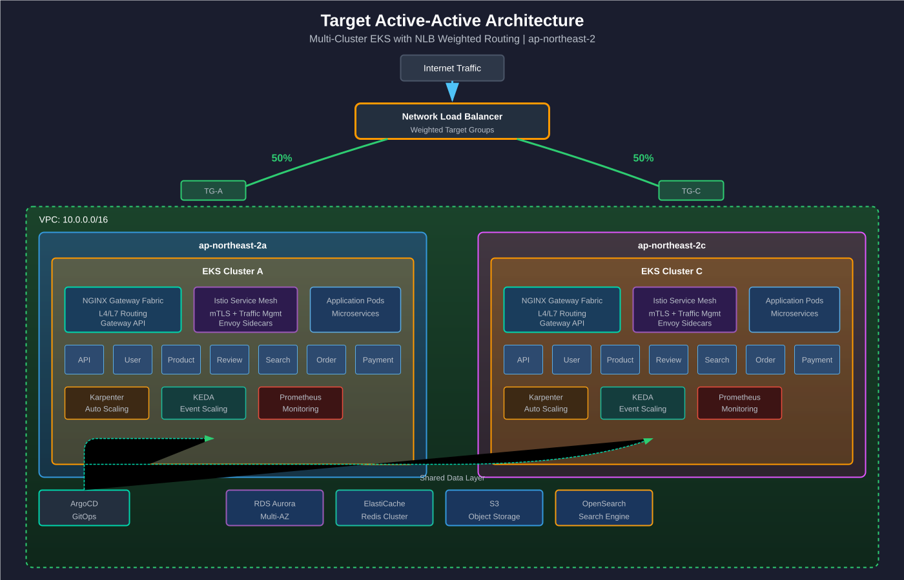
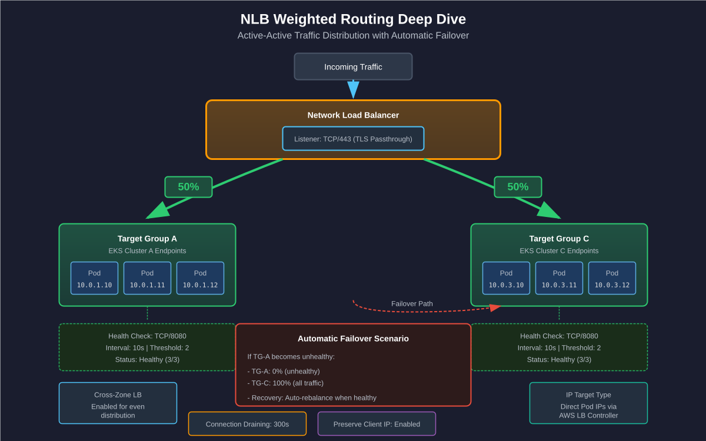

ECS → EKS Migration Deep Dive
Multi-Cluster Active-Active Architecture (30min)
오준석 (Junseok Oh)
Sr. Solutions Architect, AWS
화해 글로벌

ECS에서 EKS로 — 왜 전환을 고려하는가?
"ECS로 잘 운영하고 있었는데, 서비스 규모가 커지면서 한계가 보이기 시작했습니다."
규모가 커지면서 발생하는 ECS 한계
- 멀티클러스터 구성이 네이티브로 불가 — Blast Radius 관리 어려움
- 네트워크 제어가 제한적 — Pod 레벨 Security Group, Network Policy 부재
- IP 고갈 — awsvpc 모드에서 Task당 ENI IP 점유, 서브넷 고갈
- 에코시스템 — Helm, Karpenter, Argo, Istio 등 CNCF 생태계 활용 불가
EKS 전환 시 기대효과
- Multi-Cluster Active-Active로 Blast Radius 최소화
- Prefix Delegation으로 IP 효율성 6배 향상
- Gateway API + Istio로 표준화된 트래픽 관리
- Karpenter + KEDA로 지능형 오토스케일링
Target: Active-Active Multi-Cluster

Single Cluster vs Multi-Cluster
Single Cluster
- 관리 포인트 단일화
- 클러스터 내 Pod 간 통신 빠름
- 단점: 클러스터 장애 시 전체 서비스 중단
- 단점: 업그레이드 시 다운타임 발생
- Blast Radius: 전체 서비스
Multi-Cluster (Active-Active)
- Zone별 독립 운영
- 클러스터 업그레이드 시 무중단 가능
- 장점: Blast Radius 50% 감소
- 장점: Zone 장애 대응 가능
- 트레이드오프: 운영 복잡성 증가
멀티 클러스터 분리 전략
| 기준 | Single Cluster | Multi-Cluster |
|---|---|---|
| 서비스 수 | < 50개 서비스 | 50+ 서비스 |
| 보안 격리 | Namespace RBAC 충분 | 컴플라이언스/규제 요구 |
| 팀 독립성 | 공유 리소스 가능 | 팀별 독립 릴리스 필요 |
| Blast Radius | 전체 서비스 영향 허용 | 장애 범위 제한 필수 |
| 업그레이드 | 다운타임 허용 가능 | 무중단 필수 |
화해 판단: 전체 서비스 EKS 이관 + 무중단 업그레이드 필요 → Multi-Cluster 권장
| 패턴 | 구조 | 적합한 경우 |
|---|---|---|
| 환경별 분리 | Dev Account / Staging Account / Prod Account | 환경 간 완전 격리 필요 |
| 워크로드별 분리 | Frontend Account / Backend Account / Data Account | 팀별 비용 분리, 독립 운영 |
| 하이브리드 | Prod-Service / Prod-Data / NonProd | 화해 권장 — 서비스와 데이터 분리 + 환경 분리 |
핵심: AWS Organizations + OU 구조로 계정 표준화, 신규 계정은 Control Tower로 자동 프로비저닝
| 패턴 | 클러스터 수 | 장점 | 단점 |
|---|---|---|---|
| 환경별 | Dev + Staging + Prod | 간단, 명확한 격리 | Prod 클러스터 비대화 |
| 도메인별 | 서비스A + 서비스B + Platform | 팀 자율성 | 클러스터 관리 부담 |
| 기능별 | Service Plane + Data Plane | 워크로드 특성 최적화 | 서비스 간 통신 복잡 |
| AZ 기반 | Zone-A + Zone-C | 고가용성 극대화 | 데이터 동기화 고려 |
화해 권장: AZ 기반 Active-Active + Service/Data Plane 분리 조합
Service Plane vs Data Plane 분리
service-nsNet
Policy
data-nsEKS Multi-Plane 아키텍처 개요
Service Plane과 Data Plane을 분리하여 비용 최적화 + 데이터 안정성 극대화
- ● 리소스 분리로 Noisy Neighbor 문제 방지
- ● 워크로드 특성별 인스턴스 타입 (Spot vs On-Demand)
- ● 명확한 네트워크 격리 및 스토리지 할당 전략
워크로드 생명주기 — Stateless vs Stateful
Service/Data Plane 분리의 이점
Service Plane
- 워크로드: API, Web, Mobile BFF
- 특성: Stateless, 수평 확장 용이
- 노드: Spot Instance 70% + On-Demand 30%
- 스케일링: HPA + Karpenter (RPS 기반)
- 업그레이드: Canary/Rolling (빠른 반영)
- 장애 영향: 서비스 일시 지연 (복구 빠름)
Data Plane
- 워크로드: Kafka Consumer, Batch, ML Inference
- 특성: Stateful/Long-running, 데이터 정합성 중요
- 노드: On-Demand 90% + Spot 10% (비중요 배치만)
- 스케일링: KEDA (Queue depth/Lag 기반)
- 업그레이드: Blue/Green (안전 우선)
- 장애 영향: 데이터 유실 가능 (복구 시간 필요)
멀티 계정 네트워크 토폴로지
Prod Service Account
Prod Data Account
NonProd Account
Shared VPC
ArgoCD, Monitoring
Route 53
Private Hosted Zone / DNS Resolution
NLB Weighted Routing Deep Dive

Gateway API 소개
역할: 인프라 제공자가 정의하는 Gateway 템플릿
담당: Platform Team
역할: 실제 로드밸런서 인스턴스
담당: Cluster Admin
역할: 애플리케이션 라우팅 규칙
담당: Application Developer
VPC CNI & Prefix Delegation
| 인스턴스 | 최대 ENI | ENI당 IP | 최대 Pod |
|---|---|---|---|
| t3.medium | 3 | 6 | 17 |
| t3.large | 3 | 12 | 35 |
| m5.xlarge | 4 | 15 | 58 |
문제: ENI당 할당 가능한 Secondary IP 수 제한
결과: 노드당 Pod 수 제한 → 수평 확장 비용 증가
| 모드 | 할당 단위 | t3.medium 최대 Pod |
|---|---|---|
| Secondary IP | 개별 IP | 17 |
| Prefix Delegation | /28 (16 IPs) | 110 |
/28 Prefix = 16개 IP 한 번에 할당
- IP 할당 속도 향상 (1 API call → 16 IPs)
- 노드당 Pod 밀도 6배 이상 증가
- Nitro 인스턴스에서 최적 성능
요구사항:
- EKS 1.21+ / VPC CNI 1.9+
- Nitro 기반 인스턴스 권장
- 서브넷 /28 prefix 여유 확인
주의사항:
- 기존 노드 재시작 필요
- Windows 노드 미지원
- Custom Networking과 함께 사용 권장
Custom Networking - ENIConfig (AZ별 Pod 서브넷)
Security Group for Pods — 선택지 비교
SGP (Branch ENI)
- Pod별 Security Group 적용 가능
- Branch ENI 소모 → Pod 밀도 낮음
- 기존 SG 규칙 재활용
- m5.large: 최대 9 Branch ENI
Prefix Delegation + Network Policy
- 노드 SG 공유, Pod 격리는 Network Policy
- /28 prefix 단위 할당 → Pod 밀도 6배↑
- Cilium L3/L4/L7 필터링
- 대부분의 격리 요구사항 충족
Fargate
- Task별 SG 적용 가능 (서버리스)
- ENI 제한 무관
- DaemonSet 미지원
- EKS 제어 영역 비용 별도
화해 권장: SGP 필요 Pod만 선별 적용, 나머지는 Prefix Delegation + Network Policy 조합. 기존 SGP Pod → 대부분 Network Policy로 전환 가능
SGP Branch ENI 제약과 대안
Security Group for Pods(SGP) 아키텍처:
제약 사항:
| 인스턴스 | Branch ENI 최대 | SGP Pod 최대 |
|---|---|---|
| t3.medium | 6 | 6 |
| m5.large | 9 | 9 |
| m5.xlarge | 18 | 18 |
- Prefix Delegation과 병행 불가 (Branch ENI는 개별 IP 할당)
- SGP Pod는 Branch ENI 수에 제한됨 → 노드당 Pod 밀도 급감
방안 1: SGP 최소화 + NetworkPolicy 활용 (권장)
방안 2: SGP 필수 Pod는 Fargate로 전환
- Fargate Pod는 자체 ENI → Branch ENI 제약 없음
- RDS 직접 접근 등 SG 필수 케이스에 적합
방안 3: VPC CNI v1.15+ POD_SECURITY_GROUP_ENFORCING_MODE=standard
- Standard 모드에서 SGP + Prefix Delegation 동시 사용 가능
- 단, NetworkPolicy와 SGP 간 우선순위 주의
대부분의 Pod
- Prefix Delegation (높은 Pod 밀도)
- NetworkPolicy로 L3/L4 트래픽 제어
- Spot Instance 활용 가능
SG 필수 Pod (RDS 직접 접근 등)
- 옵션 A: Fargate (SGP 제약 없음)
- 옵션 B: 전용 노드 그룹 (SGP 활성화)
- 옵션 C: standard 모드 (v1.15+)
화해 권장: 대부분 NetworkPolicy로 전환하고, RDS 직접 접근 등 SG가 반드시 필요한 Pod만 Fargate 또는 전용 노드 그룹으로 분리
서브넷 IP 고갈 — 초기 설계 vs 후적용
초기 설계 시 적용 (권장)
- VPC 생성 시 Secondary CIDR 추가
- Pod 전용 서브넷 (/19 이상) 미리 구성
- ENIConfig AZ별 매핑 설정
- 장점: 무중단 적용
- 장점: 서브넷 사이징 자유도 높음
- 비용: 추가 비용 없음
운영 중 후적용
- Secondary CIDR 추가 → 가능 (VPC 설정)
- Pod 전용 서브넷 생성 → 가능
- Custom Networking 활성화 → 노드 롤링 재시작 필요
- 주의: 기존 Pod IP가 변경됨
- 주의: ENIConfig 적용 후 신규 노드부터 적용
- 권장: Blue/Green 노드 그룹 교체
결론: 클러스터 초기 설계 시 100.64.0.0/16 Secondary CIDR + Custom Networking을 적용하는 것이 강력히 권장됩니다. 후적용도 가능하지만 노드 롤링 재시작이 필요하며, Blue/Green 노드 그룹 교체 방식이 안전합니다.
ECS → EKS 마이그레이션 로드맵
VPC 설계, EKS 클러스터 프로비저닝,
Gateway API 설치 (2주)
단일 서비스 마이그레이션,
CI/CD 파이프라인 구축, 모니터링 설정 (2주)
서비스별 순차 마이그레이션,
트래픽 가중치 조정, ECS 축소 (4주)
ECS 종료, Multi-Cluster 활성화,
운영 안정화 (2주)
마이그레이션 사전 체크리스트
- 네트워크 준비
- VPC Secondary CIDR 추가 (100.64.0.0/16)
- Pod 전용 서브넷 생성 (/19 이상)
- Security Group 정리 및 표준화
- IAM 준비
- EKS 클러스터 역할 생성
- 노드 그룹 역할 생성
- IRSA용 OIDC Provider 설정
- Pod Identity 정책 준비
- GitOps 준비
- Git 저장소 구조 설계
- ArgoCD 설치 계획
- Helm Chart / Kustomize 선택
- 모니터링 준비
- CloudWatch Container Insights 활성화
- Prometheus/Grafana 스택 계획
- 기존 ECS 메트릭 대시보드 매핑
Block 01 Quiz
ECS → EKS Migration Deep Dive
GitOps & Progressive Delivery (30min)
오준석 (Junseok Oh)
Sr. Solutions Architect, AWS
화해 글로벌
CI/CD Pain Point
현재 문제점
- Jenkins/CodePipeline 기반 Push 모델
- 배포 상태 추적 어려움
- 롤백 시 수동 개입 필요
- 환경별 설정 일관성 부족
GitOps 도입 효과
- Git = Single Source of Truth
- 자동화된 Drift Detection
- 메트릭 기반 자동 롤백
- 환경별 설정 코드화
IaC 전략: Terraform + ArgoCD
IaC 전략 개요
인프라(Terraform)와 애플리케이션(ArgoCD)의 책임을 명확히 분리
- ● Terraform: AWS 인프라 리소스 상태 관리
- ● ArgoCD: K8s 워크로드 지속 동기화
- ● Git이 Single Source of Truth
Terraform vs ArgoCD vs ACK 의사결정
| 리소스 특성 | Terraform | ArgoCD | ACK |
|---|---|---|---|
| EKS 클러스터, VPC, Subnet | ✅ 권장 | ❌ | ❌ |
| EKS Add-on (VPC CNI, CoreDNS) | ✅ 권장 | △ 가능 | △ 가능 |
| K8s Controller (ALB, ExternalDNS) | △ 가능 | ✅ 권장 | ❌ |
| 앱 Deployment, Service | ❌ | ✅ 권장 | ❌ |
| 앱 전용 S3 Bucket | △ 가능 | △ 가능 | ✅ 권장 |
| 앱 전용 SQS Queue | △ 가능 | △ 가능 | ✅ 권장 |
| 앱 전용 IAM Role | ✅ 권장 | ❌ | △ 가능 |
| 공용 RDS/Aurora | ✅ 권장 | ❌ | △ 가능 |
| 공용 ElastiCache | ✅ 권장 | ❌ | △ 가능 |
핵심 원칙: 리소스의 생명주기가 앱과 같으면 → ACK/ArgoCD, 인프라 수준이면 → Terraform
AWS Controllers for Kubernetes (ACK)
- Kubernetes CR로 AWS 리소스를 선언적 관리
kubectl apply로 S3, SQS, RDS 등 생성/삭제- ArgoCD와 자연스럽게 통합 (GitOps)
장점: 앱과 AWS 리소스를 동일한 GitOps 워크플로우로 관리
제한: IAM, VPC 등 인프라 리소스는 지원 제한적
화해 현재 구조와 매핑:
terraform/: EKS, VPC, 공용 RDS, IAM → 유지terraform/applications/<app>/: 앱 전용 SG, IAM → 유지 (보안상 Terraform 권장)- 신규: 앱 전용 S3, SQS, SNS → ACK로 전환 검토
EKS Capabilities (관리형 Add-on, Auto Mode 등)
| 항목 | EKS Add-on (Terraform) | ArgoCD | 판단 기준 |
|---|---|---|---|
| VPC CNI | ✅ | △ | EKS API 통합, 자동 업그레이드 |
| CoreDNS | ✅ | △ | EKS 버전 호환성 자동 관리 |
| kube-proxy | ✅ | △ | EKS 버전 연동 |
| AWS LB Controller | △ | ✅ | Helm values 커스터마이징 필요 |
| External DNS | ❌ | ✅ | K8s 네이티브 설정 |
| Cert Manager | ❌ | ✅ | K8s 네이티브 설정 |
| Karpenter | △ | ✅ | NodePool CRD는 ArgoCD가 적합 |
| ADOT/CloudWatch Agent | ✅ | △ | EKS Add-on으로 간편 관리 |
원칙: EKS API로 관리되는 핵심 네트워킹/시스템 컴포넌트는 Terraform, 나머지 Controller는 ArgoCD
ACK 실전 설정
ACK 리소스 매니페스트
효과: K8s 매니페스트로 AWS 리소스 관리 → 앱팀 셀프서비스, ArgoCD GitOps 일원화
ArgoCD Sync vs Argo Rollouts
ArgoCD Sync (일반 배포)
- Git 변경 감지 → 자동/수동 Sync
- Deployment의 기본 RollingUpdate 사용
- 장점: 설정 간단, 빠른 배포
- 단점: 세밀한 트래픽 제어 불가
- 적합: 내부 서비스, 개발 환경
Argo Rollouts (Progressive Delivery)
- Canary / Blue-Green 배포 지원
- 트래픽 가중치 단계별 조정
- 장점: 메트릭 기반 자동 롤백
- 장점: Istio VirtualService 연동
- 적합: 프로덕션, 고객 대면 서비스
Argo Rollouts + Istio Canary Architecture
배포 흐름
Stable (v1)
현재 프로덕션 트래픽
weight: 90% → 0%
Canary (v2)
새 버전 트래픽
weight: 10% → 100%
AnalysisRun
- ● Prometheus 메트릭 조회
- ● 성공률 ≥ 95% → Promote
- ● 실패 시 → 자동 Rollback
→ 100%
→ 0%
Canary Deployment Flow
2분 대기 후 메트릭 분석
에러율 모니터링
5분간 안정성 검증
최종 검증
Stable로 Promote
지원 Traffic Provider: Istio, NGINX Ingress, ALB, SMI, Apache APISIX, Traefik
Zone-Aware PDB 방어 시나리오
Zone-Aware Rollouts
GitHub Self-Hosted Runner (ARC)
Actions Runner Controller (ARC)
- GitHub Actions Self-Hosted Runner를 EKS에서 실행
- Runner Pod 자동 스케일링 (HRA)
- 워크로드별 Runner 격리 가능
장점:
- VPC 내부 리소스 접근 (RDS, ElastiCache)
- ECR Push 시 IAM Role 활용
- 빌드 캐시 PVC로 속도 향상
HorizontalRunnerAutoscaler - 자동 스케일링
NGINX Gateway Fabric vs Istio Gateway
NGINX Gateway Fabric
역할: North-South 트래픽 (외부 → 클러스터)
- L4/L7 로드밸런싱
- TLS 종료
- Rate Limiting
- WAF 통합 가능
- Gateway API 네이티브
Istio Service Mesh
현재 요구사항에 미포함 (향후 검토)
참고: Service Mesh 도입 시 고려사항
- East-West 트래픽 (Pod ↔ Pod) mTLS
- 트래픽 미러링, Circuit Breaker
- Canary 배포 (Argo Rollouts 연동)
- 리소스 오버헤드 (Sidecar Proxy)
- 운영 복잡성 증가
결론: 현 단계에서는 NGINX Gateway Fabric만으로 충분. Service Mesh는 트래픽 관찰 요구사항 발생 시 도입 검토
GitOps Best Practices
- Repository 구조
- 모노레포 vs 폴리레포 결정
-
base/+overlays/Kustomize 구조- 환경별 브랜치 또는 디렉토리 분리
- Sync 전략
- Dev/Staging:
automated+selfHeal: true- Production:
manual또는 Sync Window 설정-
prune: true신중하게 적용 - 보안
- Sealed Secrets 또는 External Secrets Operator
- RBAC: AppProject별 네임스페이스 제한
- SSO 통합 (OIDC)
- 운영
- Notification 설정 (Slack, PagerDuty)
- Application 상태 대시보드 구성
- 정기적 Diff 리포트 검토
AWS 리소스 관리: Terraform vs ArgoCD vs ACK
| 리소스 유형 | 관리 도구 | 예시 | 변경 빈도 |
|---|---|---|---|
| 인프라 기반 | Terraform | VPC, EKS Cluster, RDS, IAM Role | 낮음 |
| EKS 핵심 애드온 | Terraform (EKS Add-on) | VPC CNI, CoreDNS, kube-proxy, EBS CSI | 낮음 |
| 클러스터 컨트롤러 | ArgoCD | ALB Controller, External DNS, ESO, Cert Manager | 중간 |
| App 전용 AWS 리소스 | ArgoCD or ACK | App별 SQS Queue, S3 Bucket, IAM Policy | 높음 |
화해 현재 원칙과 일치: "EKS 내 리소스는 ArgoCD, 공용 AWS 리소스는 Terraform"
ACK 도입 시점: App팀이 K8s 매니페스트로 SQS, S3 등 AWS 리소스를 직접 관리해야 할 때. 현재 단계에서는 Terraform + ArgoCD 이원화로 충분
Block 02 Quiz
ECS → EKS Migration Deep Dive
Scaling Strategy — Karpenter & KEDA (25 min)
오준석 (Junseok Oh)
Sr. Solutions Architect, AWS
화해 글로벌
Scaling Pain Point
"노드/Pod 스케일링 전략 수립이 어려움"
— ECS에서는 Auto Scaling이 간단했는데, EKS는 노드 그룹, HPA, VPA, Cluster Autoscaler 등 옵션이 너무 많습니다. 어떤 조합이 최적인지 모르겠습니다.
화해 현황:
- Cluster Autoscaler 사용 중 — 스케일 아웃에 5-7분 소요
- 노드 그룹 10개 이상 관리 복잡성
- Spot Instance 활용률 낮음 (비용 최적화 기회 상실)
Cluster Autoscaler vs Karpenter
Cluster Autoscaler
- 노드 그룹 기반 스케일링
- ASG(Auto Scaling Group) 의존
- 스케일링 속도: 분 단위 (5-10분)
- 인스턴스 유형: 노드 그룹별 고정
- Bin-packing 효율: 중간
- 구성 복잡도: 노드 그룹 수에 비례
Karpenter
- 워크로드 요구사항 기반 스케일링
- EC2 Fleet API 직접 호출
- 스케일링 속도: 초 단위 (30-60초)
- 인스턴스 유형: 동적 선택 (최적 매칭)
- Bin-packing 효율: 높음 (비용 30-50% 절감)
- 구성 복잡도: NodePool 1-2개로 단순화
Grafana: EKS Node Monitoring
CPU Requests vs Usage — Karpenter 판단 기준 시각화
NodePool 설정
Karpenter Consolidation
KEDA RPS 기반 오토스케일링
KEDA Architecture
KEDA Scalers
KEDA + Istio Metrics
Batch & Schedule 워크로드 패턴
기본 패턴: CronJob으로 배치 스케줄링
장점: 단순, K8s 네이티브, CronJob 내장 스케줄러
적합: 단일 작업, 의존성 없는 배치
패턴: Airflow UI + Pod 런타임
핵심 설정:
장점: DAG 의존성 관리, UI 제공, 복잡한 워크플로우
적합: ETL 파이프라인, ML 학습, 다단계 배치
패턴: Jenkins UI + 동적 Agent Pod
장점: 기존 Jenkins 파이프라인 재활용, 동적 리소스 할당
적합: CI/CD 빌드, 기존 Jenkins 사용 팀
패턴: KEDA Cron Scaler로 예측 스케일링
장점: SQS 큐 기반 + 시간 기반 하이브리드, Zero Scaling으로 비용 최적화
Batch 전용 Karpenter NodePool
효과: Batch 완료 후 노드 자동 회수 → 유휴 비용 0원
HPA → Karpenter → KEDA 도입 로드맵
Block 03 Quiz
ECS → EKS Migration Deep Dive
Security & Platform Engineering (20 min)
오준석 (Junseok Oh)
Sr. Solutions Architect, AWS
화해 글로벌
EKS Security Architecture
보안 계층:
- IAM Layer: OIDC Provider → IRSA/Pod Identity → AWS 서비스 접근
- Cluster Layer: RBAC, Access Entries, Cluster Endpoint 접근 제어
- Workload Layer: Pod Security Standards, Network Policy
- Data Layer: Secrets Manager, KMS 암호화
aws-auth vs Access Entries
aws-auth ConfigMap (Legacy)
- ConfigMap 기반 IAM 매핑
- 수동 편집 필요 (오류 시 접근 불가)
- 변경 이력 추적 어려움
- GitOps와 충돌 가능성
- 단점: ConfigMap 삭제 시 클러스터 잠금
Access Entries (권장)
- EKS API 기반 IAM 매핑
- AWS CLI/Console/IaC로 관리
- CloudTrail 감사 로그 자동 기록
- Terraform/CDK 완벽 지원
- 장점: ConfigMap 삭제해도 접근 유지
Access Entries 설정
RBAC & OIDC 워크플로우
"email": "alice@company.com"
"groups": ["dev-team", "admin-group"]
- update deployments
- all namespaces
groups 필드로 Subject 매핑--oidc-groups-claim=groupskind: Group 지정RBAC — ClusterRole, Role, RoleBinding
IAM Role (AWS) ↓ Access Entries EKS Cluster ↓ ClusterRoleBinding / RoleBinding Kubernetes RBAC ├─ ClusterRole → 클러스터 전체 범위 ├─ Role → 네임스페이스 범위 ├─ ClusterRoleBinding → ClusterRole ↔ Subject 연결 └─ RoleBinding → Role ↔ Subject 연결
| 리소스 | 범위 | 용도 |
|---|---|---|
| ClusterRole | 클러스터 전체 | 노드 조회, CRD 관리, 전체 네임스페이스 읽기 |
| Role | 네임스페이스 | 특정 네임스페이스 내 Pod/Service/ConfigMap 관리 |
| ClusterRoleBinding | 클러스터 전체 | ClusterRole을 사용자/그룹에 바인딩 |
| RoleBinding | 네임스페이스 | Role 또는 ClusterRole을 네임스페이스 범위로 바인딩 |
핵심: RoleBinding은 ClusterRole도 참조 가능 → 네임스페이스 범위로 축소 적용
IAM Role: BackendDevRole ↓ Access Entry (kubernetes-groups: backend-team, all-developers) ├─ ClusterRoleBinding: all-teams-viewer → 전체 읽기 └─ RoleBinding: backend-deployer → backend NS 배포 권한
화해 권장 패턴:
- Platform Team:
cluster-adminClusterRoleBinding - Backend Team: 자기 네임스페이스
deployerRole + 전체viewerClusterRole - Frontend Team: 자기 네임스페이스
deployerRole + 전체viewerClusterRole - CI/CD (ARC): 대상 네임스페이스별
deployerRoleBinding
External Secrets Operator 흐름
동작 흐름:
- ExternalSecret CR 생성 → ESO Controller 감지
- SecretStore 참조 → IRSA로 AWS 인증
- Secrets Manager에서 값 조회
- Kubernetes Secret 자동 생성/갱신
- Pod에서 Secret 사용
Network Policy 구현
2. DNS 허용 (필수)
Platform Engineering — Self-Service 아키텍처
ApplicationSet으로 팀별 자동 배포
결과: teams/ 디렉토리에 폴더만 추가하면 → 네임스페이스 + 모든 기본 정책 자동 생성
Namespace Provisioner 번들
Self-Service 흐름: 개발자 teams/my-team/ 생성 → PR → Platform Team 리뷰 → ArgoCD 자동 Namespace + 번들 생성
Block 04 Quiz
ECS → EKS Migration Deep Dive
Observability & Next Steps (20 min)
오준석 (Junseok Oh)
Sr. Solutions Architect, AWS
화해 글로벌
Observability 3 Pillars
Logs
개별 이벤트의 불변 기록
디버깅 & 감사 추적
매칭
Metrics
시계열 수치 데이터
집계 & 알람 기반
Traces
분산 요청 경로 추적
지연 구간 분석
현재 vs 목표 관측성 스택
| 영역 | 도구 | 한계 |
|---|---|---|
| Logs | CloudWatch Logs, OpenSearch | 비용 증가, 쿼리 복잡 |
| Metrics | CloudWatch Metrics | 커스텀 메트릭 비용, 15개월 보존 |
| Traces | X-Ray (부분 적용) | 샘플링 제한, 컨텍스트 전파 어려움 |
| Dashboard | CloudWatch Dashboards | 제한된 시각화 |
| 영역 | 도구 | 장점 |
|---|---|---|
| Logs | Loki + Fluent Bit | 경량, 라벨 기반 쿼리, 비용 효율 |
| Metrics | Prometheus (AMP) + Grafana | PromQL, 무제한 커스텀 메트릭 |
| Traces | Tempo + OpenTelemetry | 벤더 중립, 전체 샘플링 가능 |
| Dashboard | Grafana (AMG) | 통합 시각화, 알림, 상관분석 |
Prometheus + Grafana 아키텍처
Prometheus Operator CRD
Pull 방식 수집
Amazon Managed
Prometheus
대시보드 & 알림
ServiceMonitor
라벨 셀렉터로 스크래핑 대상 자동 발견. 새 서비스 배포 시 수동 설정 불필요
Pull 기반 수집
Prometheus가 /metrics 엔드포인트를 주기적으로 스크래핑 (기본 30s)
AWS 관리형
AMP + AMG로 운영 부담 최소화. HA/스토리지 자동 관리
Prometheus + Grafana 셋업
Datadog vs OSS Stack
Datadog
| 항목 | 내용 |
|---|---|
| 비용 | 호스트당 $15-23/월 + 로그/APM 추가 비용 |
| 기능 | 올인원 (Logs, Metrics, APM, RUM) |
| 운영 부담 | 낮음 (SaaS) |
| 장점 | 빠른 도입, 통합 UI, AI 기반 분석 |
| 단점 | 벤더 종속, 비용 예측 어려움, 데이터 소유권 |
OSS Stack (Prometheus + Loki + Tempo)
| 항목 | 내용 |
|---|---|
| 비용 | 인프라 비용만 (AMP: GB당 $0.03) |
| 기능 | 조합 필요 (각 도구 역할 명확) |
| 운영 부담 | 중간 (AWS 관리형 사용 시 낮음) |
| 장점 | 비용 투명성, 벤더 중립, 커스터마이징 |
| 단점 | 초기 학습 곡선, 통합 설정 필요 |
기존 OpenSearch와 공존 전략
기존 OpenSearch 유지,
Prometheus(AMP) + Grafana(AMG) 추가,
CloudWatch Container Insights 병행
Fluent Bit 듀얼 아웃풋:
OpenSearch + ClickHouse,
신규 서비스는 ClickHouse 전용
OpenTelemetry Collector 설치,
ClickHouse에 트레이스 저장,
Grafana에서 상관분석
OpenSearch 트래픽 모니터링,
단계적 축소 또는 공존 유지,
비용 비교 후 최종 판단
Fluent Bit 듀얼 아웃풋 설정
전환 전략:
- 기존 서비스 → OpenSearch + ClickHouse 듀얼 전송
- 신규 서비스 → ClickHouse 전용
- 2-3개월 병행 후 OpenSearch 의존도 확인 → 축소 판단
핵심 메트릭 모니터링 팁
Cluster Overview:
Application RED Metrics:
알림 규칙:
- Spot 중단 빈도 > 5회/일 → 인스턴스 다각화 검토
- Pending Pod > 0 for 2분 → Karpenter 또는 리소스 제한 확인
- Consolidation 실패 → PDB 설정 확인
핵심: 큐 깊이 대비 Worker Pod 수의 비율을 모니터링하여 스케일링이 적절한지 확인
Blue/Green 클러스터 업그레이드
프로비저닝,
애드온 호환성 검증
워크로드 동기화,
Smoke 테스트
10% → 50% → 100%
모니터링,
7일 안정화
비용 절감
DR 전략: GitOps 재구축 vs Velero 백업
GitOps 기반 재구축
- 원본: Git Repository = 클러스터 상태
- 복구: ArgoCD Sync → 전체 복원
- 대상: Stateless 워크로드에 최적
- RTO: 30분 ~ 1시간
- 추가 인프라: 불필요
- 비용: 없음 (Git 활용)
Velero 백업/복구
- 원본: etcd 스냅샷 + PV 백업
- 복구: 네임스페이스/리소스 단위 선택적 복구
- 대상: Stateful 워크로드 필수
- RTO: 15분 ~ 30분
- 추가 인프라: S3 + Velero 서버
- 비용: S3 저장 비용
화해 권장: Stateless 서비스 → GitOps 재구축 (추가 비용 0), DB → RDS 자체 백업/복구 활용, PV 있는 워크로드만 Velero 선택적 적용
비용 모니터링 & 최적화
KubeCost
- 네임스페이스/워크로드별 비용 할당
- 유휴 리소스 탐지 및 알림
- 비용 예측 대시보드
- 무료 티어로 시작 가능
Right-sizing
- VPA 권장값 기반 리소스 조정
- requests/limits 최적화
- Karpenter Consolidation 연계
- Over-provisioning 방지
Savings Plans + Spot
- Compute Savings Plans (1yr/3yr)
- Spot Instance 활용 (Karpenter)
- On-Demand 대비 40-70% 절감
- RI → SP 전환 검토
$5K-$20K/월 규모 → KubeCost 무료 티어로 시작, 네임스페이스별 비용 가시성 확보 후 Right-sizing 적용. Savings Plans로 장기 절감
분산 추적 구현: ADOT → X-Ray / Tempo
DaemonSet
빠른 시작 — AWS 관리형
- ADOT Collector DaemonSet 설치 (EKS Add-on 지원)
- X-Ray 자동 연동 → AWS Console에서 트레이스 확인
- Java/Node.js Auto-instrumentation으로 코드 변경 최소화
Grafana 통합 — Logs/Metrics/Traces 상관분석
- Grafana Tempo 추가 설치 (S3 백엔드)
- ADOT Collector에 Tempo exporter 추가
- Grafana에서 Loki ↔ Prometheus ↔ Tempo 연결
- TraceID로 로그-메트릭-트레이스 원클릭 전환
서비스 계측 확대
- Auto-instrumentation → Manual Spans 추가
- 비즈니스 로직 핵심 구간 커스텀 Span
- DB 쿼리, 외부 API 호출 추적
- Sampling 전략 수립 (Head-based → Tail-based)
화해 현재 "분산 추적 미구축" → 1단계 ADOT + X-Ray부터 시작 권장. EKS Add-on으로 설치하면 Terraform으로 관리 가능
30/60/90일 마이그레이션 로드맵
- Day 1-30: 기반 구축
- EKS 클러스터 프로비저닝 (Terraform/eksctl) - GitOps 파이프라인 구성 (ArgoCD) - Karpenter 노드 오토스케일링 설정 - 네트워크 정책 및 보안 기본 설정
- Day 31-60: 워크로드 마이그레이션
- Stateless 서비스 먼저 마이그레이션 - Canary 배포로 트래픽 점진적 전환 - Observability 스택 구축 (Prometheus, Loki) - KEDA 이벤트 기반 스케일링 적용
- Day 61-90: 최적화 및 안정화
- Stateful 서비스 마이그레이션 (DB 연동) - 비용 최적화 (Spot, Savings Plans) - 운영 자동화 (업그레이드 파이프라인) - ECS 클러스터 종료 및 정리
Deep Dive 참조 링크
Block 05 Quiz
수고하셨습니다!
전체 세션 질문 & 피드백을 환영합니다
Speaker: 오준석 (오준석 (Junseok Oh)) · Email: junseoko@amazon.com
GitBook: atomoh.gitbook.io/kubernetes-docs